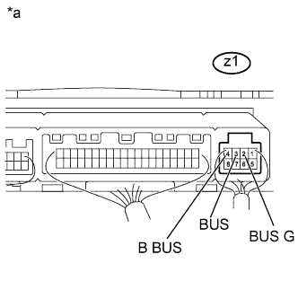

DTC B1497 Нарушение обмена данными (ИС шины) |
| Код DTC | Условие обнаружения DTC | Неисправный участок |
| B1497 | Обрыв цепи или ошибка в линии передачи данных. |
|
| 1.ПРОВЕРЬТЕ БЛОК УПРАВЛЕНИЯ СИСТЕМОЙ КОНДИЦИОНИРОВАНИЯ |
|  |
Снимите блок управления системой кондиционирования в сборе, не отсоединяя его разъемы (Нажмите здесь).
Измерьте сопротивление в соответствии со значениями, приведенными в таблице ниже.
| Контакты для подключения диагностического прибора | Условие | Заданные условия |
| z1-2 (BUS G) - масса | Всегда | Менее 1 Ом |
Измерьте напряжение в соответствии со значениями, приведенными в таблице.
| Контакты для подключения диагностического прибора | Положение переключателя | Заданные условия |
| z1-2 (BUS G) - z1-4 (B BUS) | Всегда | 11 - 14 В |
| z1-2 (BUS G) - z1-3 (BUS) | Зажигание включено | Формирование импульсов |
| *a | Устройство с подсоединенным жгутом проводов (блок управления системой кондиционирования) |
| Результат | Следующий шаг |
| ОК (при поиске неисправностей по таблице признаков неисправностей) | А |
| ОК (при поиске неисправностей по DTC) | B |
| NG | C |
|
| ||||
|
| ||||
| А | ||
| ||